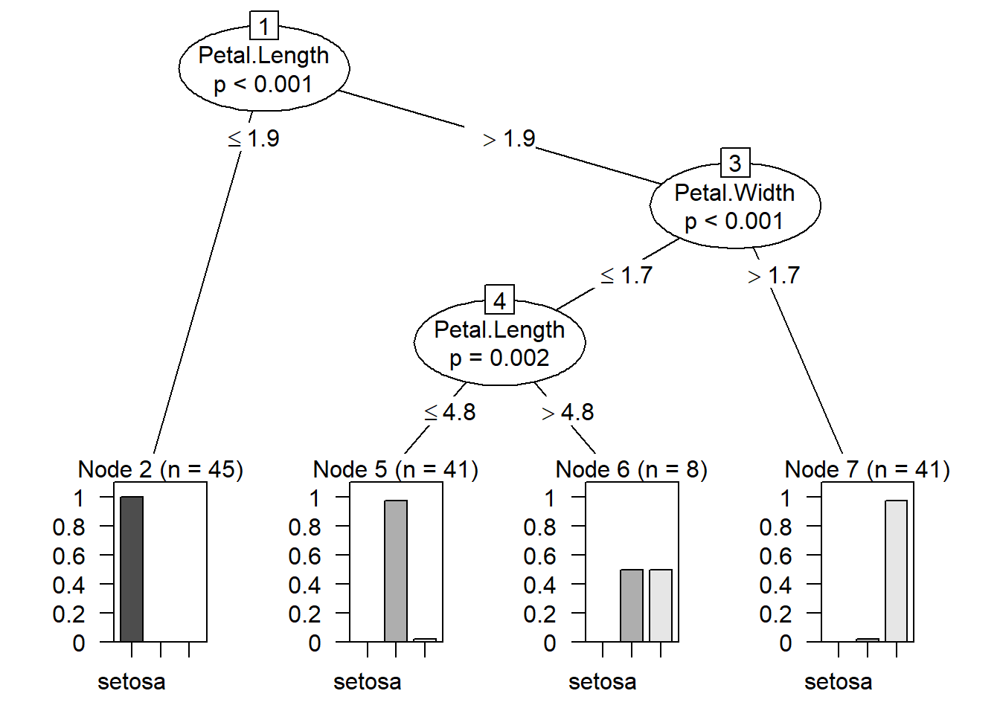
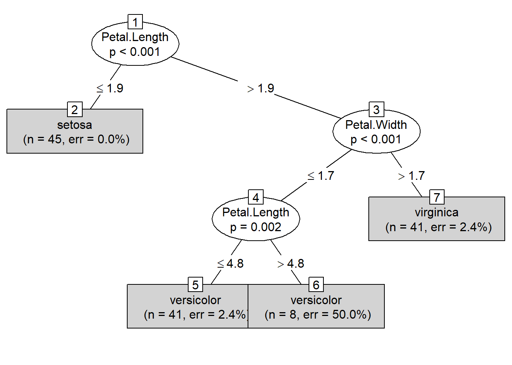

data("iris") # importing 'iris' dataset
head(iris) # view first 6 observations of datasetdplyr::glimpse(iris) # structure of dataset## Observations: 150
## Variables: 5
## $ Sepal.Length <dbl> 5.1, 4.9, 4.7, 4.6, 5.0, 5.4, 4.6, 5.0, 4.4, 4.9, 5.4, 4…
## $ Sepal.Width <dbl> 3.5, 3.0, 3.2, 3.1, 3.6, 3.9, 3.4, 3.4, 2.9, 3.1, 3.7, 3…
## $ Petal.Length <dbl> 1.4, 1.4, 1.3, 1.5, 1.4, 1.7, 1.4, 1.5, 1.4, 1.5, 1.5, 1…
## $ Petal.Width <dbl> 0.2, 0.2, 0.2, 0.2, 0.2, 0.4, 0.3, 0.2, 0.2, 0.1, 0.2, 0…
## $ Species <fct> setosa, setosa, setosa, setosa, setosa, setosa, setosa, …summary(iris) # we can see that there are 50 observations for each Species## Sepal.Length Sepal.Width Petal.Length Petal.Width
## Min. :4.300 Min. :2.000 Min. :1.000 Min. :0.100
## 1st Qu.:5.100 1st Qu.:2.800 1st Qu.:1.600 1st Qu.:0.300
## Median :5.800 Median :3.000 Median :4.350 Median :1.300
## Mean :5.843 Mean :3.057 Mean :3.758 Mean :1.199
## 3rd Qu.:6.400 3rd Qu.:3.300 3rd Qu.:5.100 3rd Qu.:1.800
## Max. :7.900 Max. :4.400 Max. :6.900 Max. :2.500
## Species
## setosa :50
## versicolor:50
## virginica :50
##
##
## table(iris$Species)##
## setosa versicolor virginica
## 50 50 50# we also notice that the observations for each Species in the dataset are ordered
# in this case, we cannot split that dataset as we normally do
# we'll use random sampling to split the dataset into Training and Test dataset
library(caTools)
set.seed(789)
split = sample.split(iris$Species, SplitRatio = 0.90)
train_set = subset(iris, split == TRUE) # training dataset
test_set = subset(iris, split == FALSE) # test dataset
table(train_set$Species) # (90% of dataset)##
## setosa versicolor virginica
## 45 45 45table(test_set$Species) # (10% of dataset)##
## setosa versicolor virginica
## 5 5 5We’ll create a model using ctree (Conditional Inference Trees)
library(partykit) # library that has ctree function
modeltree <- ctree(Species~., data = train_set) # model using ctree function
plot(modeltree) # Decision Tree based on the model created
plot(modeltree, type = "simple") # Simplified version of the Decision Tree
y_pred <- predict(modeltree, test_set) cm = table(test_set[, 5], y_pred, dnn = c("Actual Species","Predicted Species"))
cm # Confusion Matrix## Predicted Species
## Actual Species setosa versicolor virginica
## setosa 5 0 0
## versicolor 0 5 0
## virginica 0 0 5accuracy_Test <- sum(diag(cm)) / sum(cm)
accuracy_Test # 100% Accuracy## [1] 1library(caret)
confusionMatrix(cm) # for more detailed information we can use confusionMatrix function## Confusion Matrix and Statistics
##
## Predicted Species
## Actual Species setosa versicolor virginica
## setosa 5 0 0
## versicolor 0 5 0
## virginica 0 0 5
##
## Overall Statistics
##
## Accuracy : 1
## 95% CI : (0.782, 1)
## No Information Rate : 0.3333
## P-Value [Acc > NIR] : 6.969e-08
##
## Kappa : 1
##
## Mcnemar's Test P-Value : NA
##
## Statistics by Class:
##
## Class: setosa Class: versicolor Class: virginica
## Sensitivity 1.0000 1.0000 1.0000
## Specificity 1.0000 1.0000 1.0000
## Pos Pred Value 1.0000 1.0000 1.0000
## Neg Pred Value 1.0000 1.0000 1.0000
## Prevalence 0.3333 0.3333 0.3333
## Detection Rate 0.3333 0.3333 0.3333
## Detection Prevalence 0.3333 0.3333 0.3333
## Balanced Accuracy 1.0000 1.0000 1.0000We get a 100% accuracy with the model created using ctree.
Although this is a good dataset, we will not find a perfect dataset such as this in the real world.